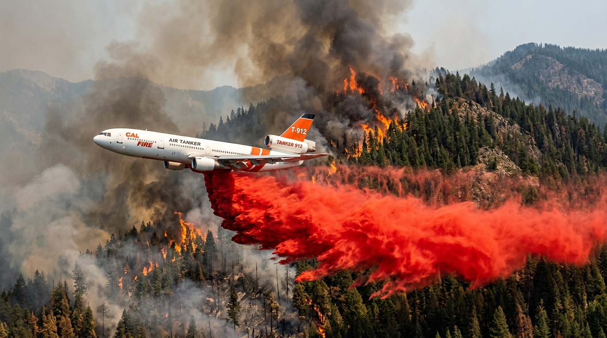

Volume and Mission
Large Air Tankers, or LATs, are one of the most visible tools in bushfire response. According to the US National Interagency Fire Center, large airtankers generally carry between 2,000 and 4,000 gallons [approximately 7,500 to 15,000 litres] of retardant or water, while very large airtankers carry even more.
target Strategic Goal
Their mission is not usually to “put out” a major bushfire by themselves, but to slow fire spread, reduce intensity, and protect key areas long enough for ground crews to act.

The Strategic Barrier
Rather than dropping directly on the most extreme flames, LATs often lay long lines of fire retardant ahead of the fire front or beside its flanks. The retardant is commonly bright red so crews and pilots can clearly see where it has landed. This helps create a temporary barrier by coating vegetation and reducing its ability to ignite quickly.
In practice, the aim is to buy time: time for firefighters to strengthen containment lines, protect assets, or carry out other suppression work under more manageable conditions. These aircraft are often converted from commercial jets, leveraging their existing size, range, and speed.
Operational Reality
Environmental Limits: In extreme winds, rough terrain, or intense crown fires, the impact of aerial drops can be limited or short-lived.
Resource Intensity: They require specialised airbases, loading systems, and complex coordination with ground crews and air attack supervisors.
Risk Management: Low-level flight over mountainous, smoky terrains necessitates strict aviation standards and careful airspace management.
Projecting Effort
Still, LATs remain highly valuable because they can project suppression effort into places that are inaccessible or too dangerous for immediate ground action. They are especially useful for rapid initial attack and for reinforcing critical control lines.
"Their best results come when they are paired with ground crews who can take advantage of the slowed fire edge."